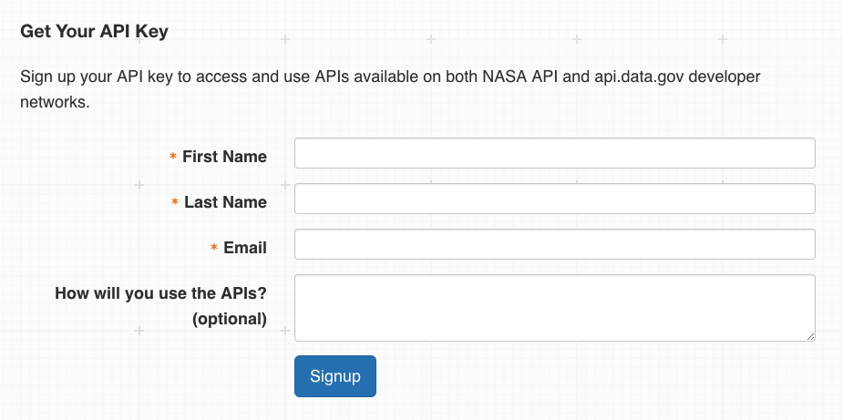

Welcome!
Hey, you! Yeah, you there! MORE
STUFF
HEREREEEEEEEE
Well, you're in luck.
NASA provides an impressively long list of APIs, including those related to:
- Mars Rover images
- EPIC (the Earth Polychromatic Imaging Camera)
- Earth Imagery
- Patents
- Space Sounds
We'll focus on the EPIC API, which provides for easy access to "full disc" or "blue marble" images of Earth taken from the DISCOVR spacecraft, which orbits the Sun at LaGrange Point 1 ("L1"), approximately one million miles from Earth's surface. As you might expect, there are plenty of opportunities to do interesting things with the data that this API returns - we'll see some of that shortly. This is but one of many APIs provided by NASA, and after reading this guide, you'll be well on your way to using any NASA API that you please.
What We're Learning
In this guide, we'll show you how to access EPIC imagery data through NASA's API interface, and walk you through the process of using Javascript to make (and automate!) your own API calls. NASA's official API documentation (located here) is somewhat brief, and although most of their APIs are fairly simple, there are a few undocumented "quirks" that you'll need to know about before going too far. The API documentation also doesn't include detailed code examples for most of their APIs, which is something that we'll cover fairly extensively.
And, speaking of detailed code examples: I'm a firm believer in learning by doing, so we'll end our guide with a project that showcases what we can do with NASA APIs. We'll use the mighty EPIC API to show you beautiful images of Earth, centered on coordinates of your choosing.
Getting Authenticated
First, however, we must obtain an API key. NASA allows access to any of its web services without authentication, although access is severely limited. Any non-trivial applications will almost definitely need to get and use a key for API requests. Fortunately, obtaining and using a key is very simple.
To get your very own key, navigate to https://api.nasa/gov. Scroll down to the section that reads "Get Your API Key." It looks like this:
Enter the necessary information, and click on the "Signup" button. You’ll receive an email in a few moments containing the long sequence of numbers and letters that form your API Key. You’ll also see a link that makes a simple call to the Astronomy Picture of the Day (or, APOD) API using your new key. If you click the link and see a string of text containing "date", "explanation", "hdurl", and so forth, your key is working! Congratulations.
A Word About Rate Limits
NASA restricts access to its Web Services on an hourly basis; at the moment, default access limits are 1,000 requests per hour, across all api.nasa.gov services. You’ll need to keep this in mind when designing an application that leverages a NASA API. Make too many calls, and your key will be temporarily blocked, which isn’t fun for anybody. In the context of many of NASA’s APIs, 1,000 requests is fairly limited, so plan accordingly. You'll see this come into play soon enough.
...And A Word About Documentation
The EPIC API appears to have two distinct sources of documentation. A brief list of endpoints and example queries is provided at api.nasa.gov, which itself links to another set of documentation maintained on epic.gsfc.nasa.gov/about/api. The two sites appear to be fairly consistent with one another, although the latter indicates a different set of URLs for accessing API endpoints. It appears that the endpoints indicated on api.nasa.gov were created to provide CORS Support (more information about that here), and as such these will be the endpoints used with this guide. When it's necessary to reference a particular documentation source, we'll call the api.nasa.gov documents the "primary documentation", and the epic.gsfc.nasa.gov documents the "alternate documentation."
Ready To Make Something?
Well, you should be. Next, you'll learn how to send requests to NASA APIs - and interpret what they send back.